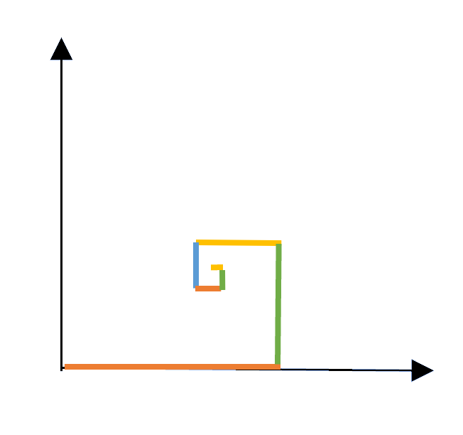

Ciągi i szeregi¶
Ciąg \((a_n)\) to funkcja, która każdej liczbie naturalnej \(n\) przyporządkowuje liczbę \(a_n\). Możemy go zapisać jako \(a_1,a_2,a_3,\ldots\) albo \(\{a_n\}_{n=1}^{\infty}\). Liczby \(a_n\) nazywamy wyrazami ciągu. Szereg jest wyrażeniem powstałym przez dodawanie wyrazów ciągu:
Jego \(m\)-tą sumą częściową nazywamy sumę pierwszych \(m\) wyrazów:
Jeżeli ciąg sum częściowych \((S_m)\) ma skończoną granicę, to szereg \(\sum_{n=1}^{\infty}a_n\) nazywamy zbieżnym, a tę granicę — jego sumą. W przeciwnym razie szereg jest rozbieżny.
Wykład¶
- Materiały: Ciągi.pdf
Zadania do wykonania ręcznie — część A¶
Zadanie 1. Jaki to ciąg: \(4,4,4,4,4,4,\ldots\)?
Zadanie 2. Oblicz wartość piątego wyrazu ciągu arytmetycznego, jeżeli jego czwarty wyraz ma wartość 20, a szósty ma wartość 28.
Zadanie 3. Oblicz wartość ósmego wyrazu ciągu geometrycznego, którego siódmy wyraz ma wartość 9, a dziewiąty ma wartość 1.
Zadanie 4. Dla ciągu o wzorze ogólnym \(a_n=2n-10\) określ, ile wyrazów ciągu przyjmuje wartość ujemną.
Zadanie 5. Podaj wzór rekurencyjny \(a_{n+1}=a_n+\ldots\) ciągu arytmetycznego, którego pierwszy wyraz ma wartość 5, a dziesiąty wyraz ma wartość 23.
Zadanie 6. Oblicz sumę wyrazów ciągu geometrycznego: \(-1+2-4+\ldots-64\).
Zadanie 7. Udowodnij, że \(a_n=2n^2-1\) nie jest ciągiem arytmetycznym.
Zadanie 8. Ciąg arytmetyczny składa się z 200 elementów. Pierwszy z nich ma wartość \(-10\), a wartością ostatniego jest 60. Ile wynosi suma tego ciągu?
Zadanie 9. Ile wynosi wyrażenie \(1+2+4+8+\ldots+2^{10}\)?
Zadanie 10. Dla jakich wartości parametru \(n\) podany ciąg jest arytmetyczny: \((n^2-1)\), \((3n+1)\), \((2n^2-6)\)?
Zadanie 11. Pomiędzy liczby 4 i 108 wstaw dwie liczby tak, by tworzyły ciąg geometryczny.
Zadanie 12. Udowodnij, że w ciągu arytmetycznym każdy wyraz \(a_n\) jest średnią arytmetyczną swoich sąsiadów:
$$ a_n=\frac{a_{n-1}+a_{n+1}}{2}. $$
Zadanie 13. Udowodnij, że w ciągu geometrycznym każdy wyraz \(a_n\) jest średnią geometryczną swoich sąsiadów:
$$ a_n^2=a_{n-1}\cdot a_{n+1}. $$
Zadania przy asyście komputera¶
Zadanie 1. Do czego w Octave służą polecenia:
cumsum,diff?
Zadanie 2. Używając Octave, wyznacz sumy skończone:
- \(\displaystyle \sum_{k=1}^{100} k^2\),
- \(\displaystyle \frac{4}{N}\sum_{k=1}^{N}\sqrt{1-\frac{k^2}{N^2}}\) dla \(N=10000\).
Uwaga: powyższe wyrażenie z całkiem niezłą dokładnością przybliża pole koła o promieniu 1, czyli wartość \(\pi\).
Zadanie 3. Znajdź w Wolfram Alpha następujące sumy nieskończone:
- \(\displaystyle \sum_{k=0}^{\infty}\left(\frac{3}{4}\right)^k\) — wyjątkowo ten przykład najpierw zrób ręcznie,
- \(\displaystyle \sum_{k=2}^{\infty}\frac{1}{k^2-1}\),
- \(\displaystyle \sum_{k=2}^{\infty}\frac{1}{k^2-k-1}\),
- \(\displaystyle \sum_{k=0}^{\infty}k\,a^{-k}\), \(|a|>1\),
- \(\displaystyle \sum_{k=0}^{\infty}\frac{2k+1}{(2k)!}\).
Zadanie 4. W pewnym eksperymencie dostaliśmy wartość \(1.291285\ldots\). Sprawdź na stronie OEIS, czy za tym nie stoi coś bardziej fundamentalnego. Wskazówka: na stronie wpisz 1,2,9,1,2,8,5.
Zadanie 5. Mamy ciąg \(1,2,4,7,11,16,\ldots\), gdzie widzimy, że przyrosty są zadane kolejnymi liczbami naturalnymi. Używając strony OEIS, ustal, jaka jest postać \(a_n\).
Zadanie 6. Ile wynosi suma szeregu
Zadanie 7. Wiemy, że szereg harmoniczny jest rozbieżny, więc od wartości jeden rośnie w sposób nieograniczony, choć dość powolnie. Ile wyrazów musimy zsumować, by dostać wartość 100?
Zadanie 8. Podaj wzór na całkowitą liczbę bloków potrzebnych do stworzenia piramidy o \(n\) stopniach. Zacznij od narysowania, jak taka konstrukcja wygląda od góry — jeden blok na warstwie 4 bloków, które z kolei leżą na warstwie 9 bloków, a te na warstwie 16 bloków itd.
Napisz sześć kolejnych wartości dla kolejnych \(n\), np.
Zastosuj metodę z wykładu wykorzystującą w Octave polecenie diff. Znajdź końcowe wyrażenie. Podpowiedź: będzie to wielomian trzeciego stopnia w \(n\). Dopiero na sam koniec możesz sprawdzić swój wynik z tym uzyskanym w Wolfram Alpha lub OEIS.
Uwaga: sprawdzenie odpowiedzi wcześniej oznacza, że jesteś oszustem i dosięgnie Cię klątwa faraona.
Zadanie 9. Według pewnej legendy związanej z szachami pewien mędrzec miał poprosić króla o „skromną” nagrodę:
„Połóż panie na pierwszym polu szachownicy jedno ziarno pszenicy (grain of wheat), na drugim dwa, na kolejnych cztery, osiem, szesnaście i tak do ostatniego 64. pola, za każdym razem podwajając ich liczbę.”
Ile to ziaren pszenicy? Zakładając utrzymanie światowych zbiorów pszenicy z zeszłego roku (\(7{,}52\times10^{11}\,\mathrm{kg}\)), ile czasu zajęłoby uzbieranie takiej ilości?
Zadanie 10. Mrówka siedząca w początku układu współrzędnych postanowiła pójść 1 metr w prawo, następnie \(1/2\) metra w górę, następnie \(1/3\) metra w lewo, \(1/4\) metra w dół, \(1/5\) metra w prawo itd. Do jakiego miejsca ostatecznie doszła? Podaj współrzędne końcowego punktu.

Zadanie 11. Poniższy program w Octave wyznacza kilka pierwszych elementów ciągu Viète’a, który jest zbieżny do \(2/\pi\), i na tej podstawie wyświetla kolejne przybliżenia liczby \(\pi\):
N = 10;
x = zeros(1, N);
x(1) = sqrt(2);
for i = 1:(N - 1)
x(i + 1) = sqrt(2 + x(i));
wynik = 2 * 2^i / prod(x(1:i));
disp([i, wynik, pi - wynik]);
endfor
Uruchom ten program. Przy okazji zapamiętaj na przyszłość użycie komendy disp. Przy jakiej dokładności wyznaczenia liczby \(\pi\) dokładność uzyskiwana w Octave zaczyna odbiegać od wyników?
Zadanie 12. Zazwyczaj przy ciągach pada pytanie wyłącznie o finalną granicę, jednak możemy również zapytać, jak osiągana jest ta granica, np. poprzez zachowanie się jak funkcja potęgowa, logarytmiczna, liniowa lub wykładnicza. Na wykładzie omawiany jest przykład ze zbieżnością
$$ \frac{\sin(1/n)}{1/n}. $$
Program:
n = 1:1000;
y = abs(sin(1./n)./(1./n) - 1);
plot(y, "+;lin-lin;");
xlim([0, 20]);
pause(2);
semilogx(y, "+;log-lin;");
pause(2);
semilogy(y, "+;lin-log;");
pause(2);
loglog(y, "+;log-log;");
pause(2);
loglog(n, y, "+;log-log;", n, 1./n.^2, ";1/n^2;");
pause(2);
loglog(n, y, "+;log-log;", n, 1./n.^2/6, "r;1/6n^2;");
Uruchom ten program i odpowiedz na pytania:
- Do czego w Octave służą polecenia
semilogx,semilogyiloglog? - Zmodyfikuj program tak, by można było za jego pomocą określić szybkość zbieżności ciągu \(a_n=2^{1/n}\).
- Uwaga: w przykładzie z wykładu zastosowano odjęcie 1, aby badać zbieżność do zera. To samo będzie konieczne w analizowanym przykładzie — zrealizuj więc odjęcie 1 od podanego ciągu.
-
Pamiętaj również o poniższym zestawieniu na temat szybkości zbieżności, gdzie za pomocą zwykłych wykresów można szacować, czy wiodący czynnik w jakiejś zależności ma charakter:
-
liniowy, \(f(x) = ax + b\),
Lin-Lin - logarytmiczny, \(f(x) = a \log x + b\),
Log-Lin - wykładniczy, \(f(x) = b \cdot a^x\),
Lin-Log - potęgowy, \(f(x) = ax^b\).
Log-Log
Wartości \(a\) i \(b\) można odczytać z parametrów linii prostej na wykresie danego rodzaju
Zadania do wykonania ręcznie — część B¶
Zadanie 1. Ile wynosi granica ciągu:
- \(\displaystyle a_n=\frac{n^3+2n^2+3n+4}{4-3n+2n^2-n^3}\)?
- \(\displaystyle a_n=\frac{1+\frac12+\frac14+\ldots+\frac{1}{2^n}}{1+3+5+\ldots+(2n-1)}\)?
- \(\displaystyle a_n=\frac{2^{n+1}+3^{2n-1}}{4^n+9^n}\)?
Zadanie 2. Wyznacz granicę niewłaściwą
Zadanie 3. Ustal, czemu równe są granice
Zadanie 4. Podaj przykład ciągu mającego granicę niewłaściwą.
Zadanie 5. W jakim przypadku znajomość granicy dwóch ciągów \(a_n\) i \(b_n\) nie wystarcza do stwierdzenia istnienia i ewentualnej wartości granicy ciągu \(a_n/b_n\)?
Zadanie 6. Czy granica ciągu o elementach wymiernych może być niewymierna?